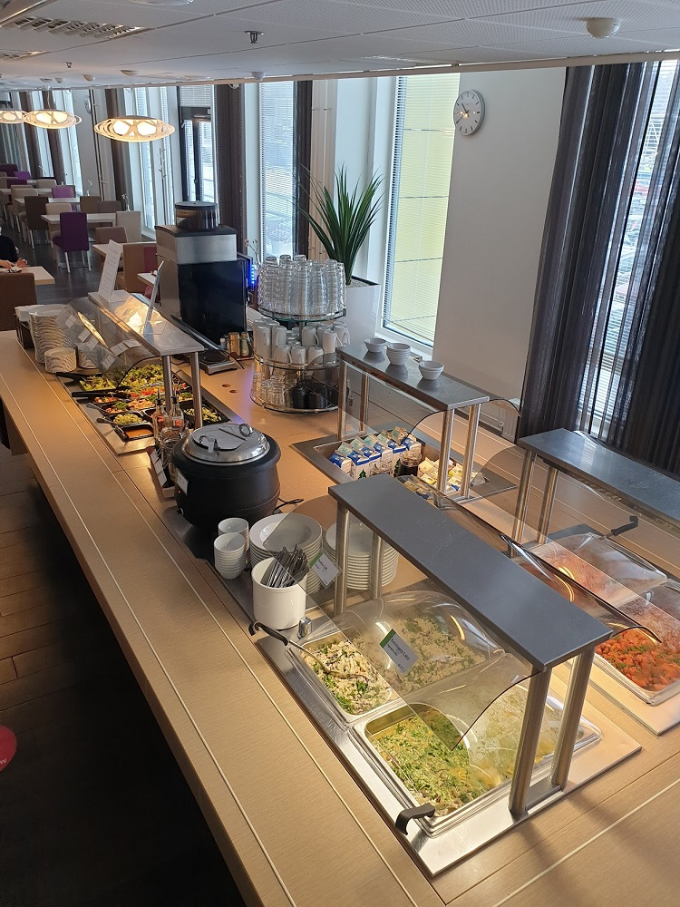

Me working as a member of the advance voting comission
A rooftop garden at work
The town of Llanberis, Wales. I did a work placement there.

Lake Padarn, Wales. From when I was doing my work placement there
Paring food and wine at work
A wine tasting event
Serving sparkling wine.
Working in events & congress
Working in events & congress

A picture I took of our lunch buffet for social media posting
Volunteering at the cat shelter
Volunteering at the cat shelter
At the top of Mt. Snowdon (1085m), the highest point of England and Wales